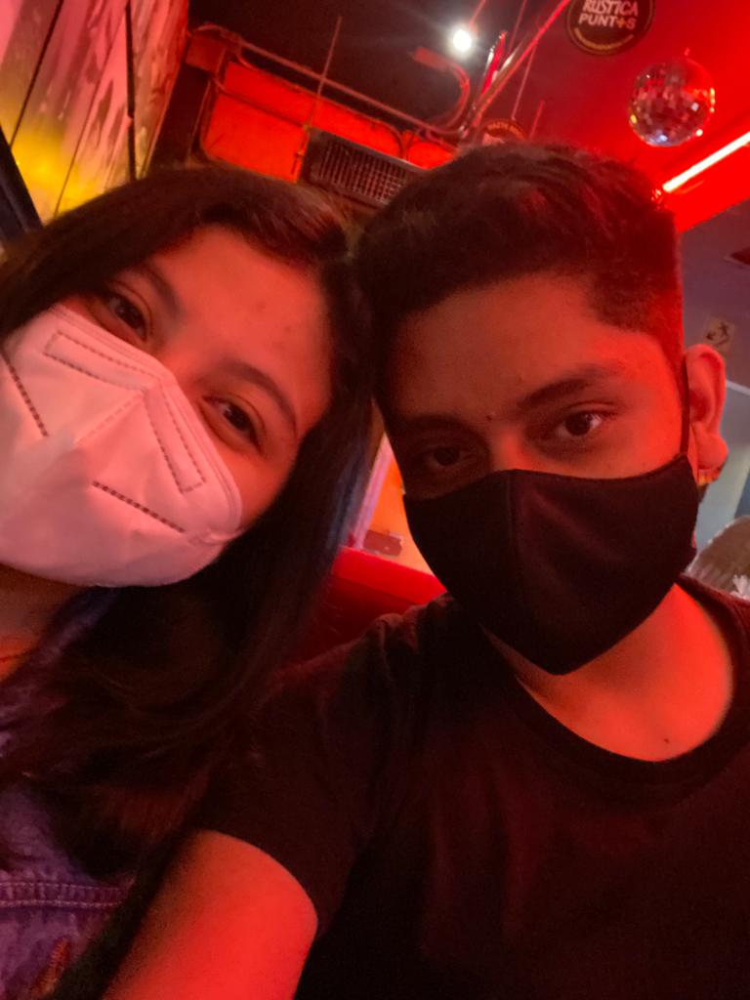

We seek to assist farmers and wholesalers in the purchase and sale of organic products.
Nuestras Fotos ❤

Luigui Mejia
Osmar Gil
Alex Donayre
Alexis Bautista
Jhomax Torres
Cristhian Riquelme
Farmers
We focus on people who are involved in agriculture in their daily lives to offer them an innovative tool for the promotion and marketing of their organic products with a great reach, in a fast way and with different contact information about different wholesalers.